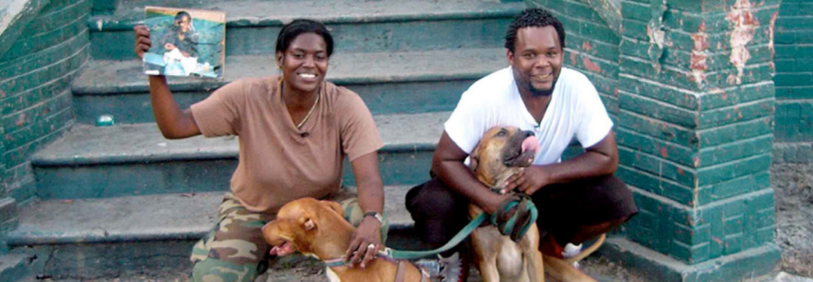

TROUBLE THE WATER (2008) in 35mm introduced by Dr. Kate Burrows
TROUBLE THE WATER (Tia Lessin and Carl Deal, 2008, 96 min, 35mm)
TROUBLE THE WATER is a stirring documentary centered around the self-shot video camera footage of Kimberly Rivers Roberts, a New Orleans resident and aspiring entrepreneur who captured the harrowing ordeal of Hurricane Katrina from her home in the 9th Ward as it unfolded. Building upon Roberts’ stunning first-person documentation, filmmakers Tia Lessin and Carl Deal (THE JANES; STEAL THIS STORY, PLEASE!) survey the broader political and cultural landscape that shaped the tragedy and its aftermath, while centering the voices of the hardest hit residents rather than officials and “experts.” The film balances a damning inquiry into systemic inequities brought into the open by the storm with an inspiring account of the community-led aid efforts that emerged in its wake – all while crafting a cinematic experience that, in the words of New York Times critic Manohla Dargis, “ebbs and flows like great drama.”
Hurricane Katrina was a shamefully defining, yet widely transformative moment in American life. Revealing structural conditions of racialized inequality in everything from civil engineering and disaster relief to industrial contamination and mental health, the storm led to lasting changes in the study of public health and sociology. Before our screening of TROUBLE THE WATER, the Block will welcome Dr. Kate Burrows, Assistant Professor of Public Health Sciences at Univeristy of Chicago, to discuss how scientists examine the short- and long-term health impacts of hurricanes, and to reflect on the role of Katrina on the study of community well-being over the last 20 years.
About the speaker:
Dr. Kate Burrows studies the impacts of climate change on human health and wellbeing. She is trained in mixed methods approaches and uses a combination of qualitative interviews and bigger data analyses to investigate the ways in which climate and weather-related extremes impact individual and community health. Dr. Burrows has interdisciplinary training in environmental epidemiology (PhD, Yale University School of the Environment) and social-behavioral sciences (MPH, Columbia University, Mailman School of Public Health), which allows her to investigate global health issues from a unique perspective that incorporates sociocultural determinants of health and environmental exposures. As a postdoctoral fellow at Brown University, Dr. Burrows evaluated both the short- and long-term impacts of hurricanes on a range of health outcomes, including cardiovascular and respiratory hospitalizations and disability. Her current research is focused on the mental health impacts of extreme temperature.
Science on Screen
Supported by the Sloan Foundation and the Coolidge Corner Cinema’s Science on Screen program, each of the screenings in the “Watching the Weather” series will feature extended introductions by scientists, historians, and scholars, who will shed light on the themes and histories depicted on screen.
An initiative of the COOLIDGE CORNER THEATRE, with major support from the ALFRED P. SLOAN FOUNDATION.